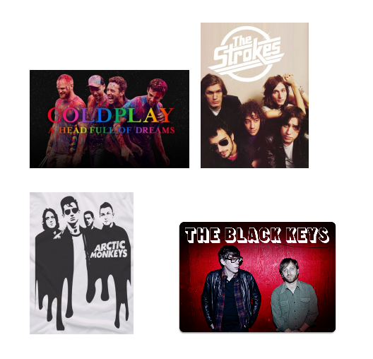
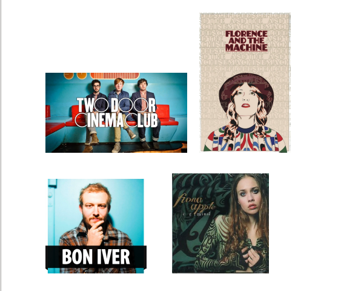
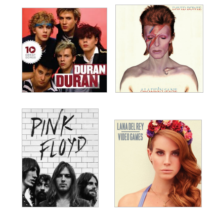

By Bakul Tikoo
So you’re feeling a little gloomy on a cold Tuesday night. Or you didn’t have the best of days at work. Or you can’t get over a past love. Whatever the anomaly, MUSIC is always there to cheer you up. Music has the amazing power to heal your inner woes and bring out your calmer persona.
Now, all people have different tastes in music. For what I have experienced so far, a music genre called “indie” has helped me sail through bad times. Indie is an abbreviation for “independence” or “independent”. Indie music may be of various types-
“Indie electronic” which covers rock-based artists who share an affinity for electronic music using samplers, synthesizers, drums and computer programs. Artists that I recommend in this genre are “Foster the People”, whose songs like “Pumped up kicks”, “Houdini” and “Ruby” are a must-listen; “Gorillaz”, now out with their new album have composed a number of great songs like “Feel good.Inc”, “Empire Ants”, “Saturnz Barz” and “Andromeda”. Other bands that I recommend in this genre are “Owl City” and “MGMT” who are known to make upbeat, stimulating music.
“Indie rock” which is a genre of alternative rock. Artists like “The Strokes”, who have made all-time favourite songs like “You only live once”, “Last nite”, “Someday” and “Undercover of Darkness”; “Coldplay”, which is an alternative-rock band known to mend broken hearts and have numerous billboard chart toppers but I would recommend the lesser known ones like “Don’t Panic”, “We never change”, “All your friends”, “Cemetries of London”, “Fix you” and “Paradise” which are the real deal. Other artists of this genre include “Arctic Monkeys” with songs like “505”, “Do me a favour”, “Hellcat spangled shalalala”, “From the Ritz to the Rubble” and “Mad Sounds” under their bag which are the best to listen to when you want some alone time coupled with a warm cup of coffee. This genre also includes famous bands like “Radiohead”, “The Black Keys”, “Muse” and “The Killers” whose music you must look into.
“Indie pop” which is a subculture and counterpart of indie rock. Artists to look into are “Two door cinema club”, with singles like “Something good can work”, “Cigarettes in the theatre” and “What you know”; “Florence and the machine”, with godly music like “Dog days are over”, “What the water gave me”, “Long and lost”, “Ship to wreck” and “Shake it off”; and “Bon Iver”, with many ground-breaking songs like “Skinny love”, “Holocene” and “Re:Stacks”. Other artists from this genre having a fresh sound are “Fiona Apple”, “Lorde”, “Of Monsters and Men”, and “The xx”.
Apart from the indie genre, songs like “Losing my Religion” by R.E.M., “Lights Out, Words Gone” by Bombay Bicycle Club, “Feels Like We Only Go Backwards” by Tame Impala, “Lying is the Most Fun a Girl Can Have Without Taking her Clothes off” by Panic! At the Disco and “Stuck On The Puzzle” by Alex Turner and “Video Games” by Lana Del Rey, the queen of sad music, are my favourites to listen to when I’m feeling blue.
Oldies like “Wonderwall” by Oasis, “If I had a Gun” by Noel Gallagher, “Wish You Were Here” by Pink Floyd, “Broken Wings” by Mr. Mister, “Come Undone” by Duran Duran and “Heroes” by David Bowie also soothe the soul.
If you want to find gems of the music fraternity, l would suggest you delve into the world of lesser known artists instead of the mainstream pop culture.
